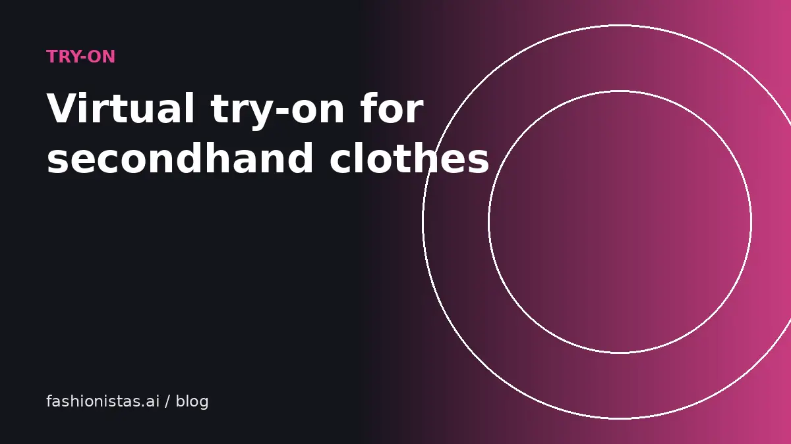

Virtual try-on for secondhand clothes: see it on you before you buy

The biggest risk in buying secondhand online is fit and look: most resale sales are final or come with return hassles, and a flat photo on a hanger tells you little about how something will look on you. Virtual try-on uses AI to show you wearing the item, using your own photo. Here's how it works, what it is genuinely good for, its limits, and how to get the best results.
What virtual try-on actually does
Modern virtual try-on uses image-generation models trained on pairs of people and garments. You give it two pictures: a photo of you, and a photo of the garment. The model redraws you wearing that garment, keeping your face, body shape, pose and background while replacing the clothing.
This is different from older "sticker" style try-on, which pasted a cut-out garment over your photo. Redrawing means the fabric drapes over your actual body, sleeves follow your arms, and the result looks like a photo instead of a collage.
fashionistas.ai Try it on works this way. You can paste a link to a resale listing, and it reads the listing's main photo for you. On Android you can also share a listing straight from your browser to fashionistas.ai.
What it's good for
- Color and style. Does this shade of green work with your skin tone? Does an oversized blazer suit you or swamp you? Try-on is very good at answering these questions.
- Outfit decisions. See whether a piece goes with your look before committing.
- Comparing options. Try three different jackets from three different sellers and compare side by side.
- Avoiding impulse regret. Seeing an item on you is a good reality check before hitting buy.
- Sellers too. If you sell, buyers who can see themselves in your item are more likely to buy it.
What it can't tell you
Be clear-eyed about the limits:
- Exact fit. Try-on shows how a garment looks on your body shape, but it can't know that a size 6 in one brand is tight across your shoulders. Always check measurements. Our measuring guide and size conversion guide help here.
- Fabric feel and weight. It can't tell you whether a sweater is scratchy.
- Hidden flaws. It works from the seller's photo; if the photo hides a stain, so will the try-on.
- Small details. Fine prints, tiny logos and complex patterns may be simplified.
Use try-on to decide whether you love the look, then use measurements and the seller's description to decide whether it will fit.
How to take a photo that gives good results
The quality of your photo matters more than anything else.
- Stand facing the camera, full body or at least from head to mid-thigh for tops, arms slightly away from your sides.
- Wear fitted, simple clothes like a plain t-shirt and leggings or jeans. Bulky coats and scarves confuse the model about your shape.
- Use good, even light, like daylight from a window in front of you.
- Use a plain background if you can. It isn't required, but it helps.
- Keep it sharp. Ask someone to take it, or use a timer and prop your phone at chest height.
- One person only in the photo.
Save this photo and reuse it. A good base photo gives consistent results across every item you try.
What makes a good garment photo
Since you don't control the seller's photos, pick the best one from the listing:
- A front-facing photo of the whole garment works best.
- Flat lays and hanger shots both work. A photo on a model works too, as long as the garment is clearly visible.
- Avoid close-ups, label shots or photos where the item is folded or partly hidden.
If a listing only has poor photos, ask the seller for a clear front shot. Good sellers are happy to help, and photo tips for sellers explain why it helps them too.
Privacy and your photos
Your photo is personal, so check how any try-on tool handles it. Look for clear answers to: Is my photo stored? For how long? Is it used to train models? Can I delete it?
fashionistas.ai's privacy policy explains how photos are handled. Try-on is free; signing in with one tap gives you a daily allowance of try-ons tied to your account.
Step by step: try on a resale listing
- Find an item you like on Poshmark, Depop, Mercari or another resale site and copy the listing link.
- Open Try it on and paste the link. The tool fetches the listing's main photo. If a site blocks it, save the photo and upload it instead.
- Add your photo, or reuse the one you saved last time.
- Wait about half a minute while the model redraws you wearing the item.
- Compare it with other options, save the looks you like, and go back to the listing to check measurements and condition before buying.
If the result looks off, try a different photo of the garment or a clearer photo of yourself. Most odd results come from busy backgrounds, folded garments or photos where your arms cover your body.
Why it matters more for secondhand
When you buy new from a big retailer, free returns soften a bad guess. Secondhand is different. Many resale purchases are final unless the item is not as described, and each seller is a different person with a different closet. Being more confident before you buy saves you the hassle of reselling something that didn't work, and it is kinder to sellers too. Fewer disappointed buyers means fewer returns and better reviews on both sides.
Try-on for sellers
If you sell, clean front-facing cover photos make your listings work better in try-on, which helps buyers commit. See photo tips.
Try-on for decor and art: see it in your space
Try-on is for things you wear. For things you hang or place, like art, mirrors and decor, the equivalent is placing the item in a photo of your room. See in my space lets you put a piece of art on your own wall at its real size before you buy it. Our guide to seeing art on your wall before buying explains how to measure and get a true-to-scale preview.
FAQ
How accurate is virtual try-on?
Modern AI try-on is good at showing color, style and how a garment drapes on your body shape. It can't guarantee exact fit for a specific size, so always check the listing's measurements too.
Can I virtually try on clothes from Poshmark or Depop?
Yes. With fashionistas.ai Try it on you can paste a listing link and it reads the listing's main photo. Some sites block automated access, in which case you can save the photo and upload it instead.
Is virtual try-on free?
Try-on on fashionistas.ai is free to use, with a daily allowance when you sign in.
What photo should I use for virtual try-on?
A sharp, well-lit, front-facing photo of yourself in simple fitted clothing, standing with arms slightly away from your body, ideally against a plain background.
Does virtual try-on work for shoes and bags?
It works best for clothing worn on the body, such as tops, dresses, jackets and pants. Accessories may be simplified.